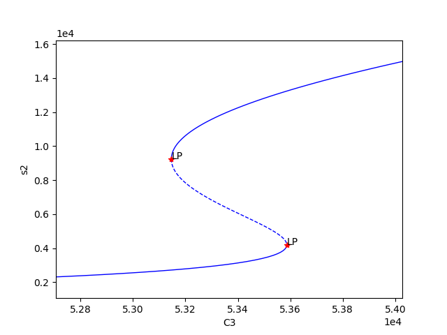
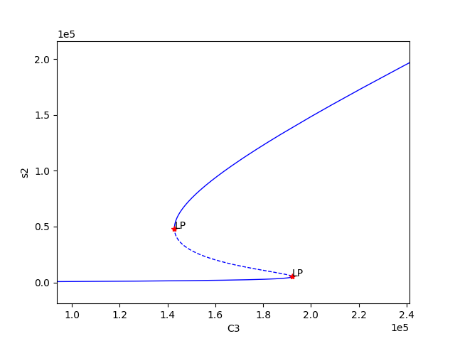
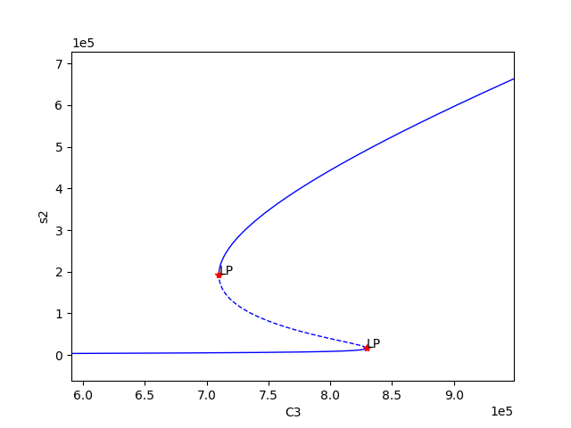

An Example User Case Scenario¶
In this section we describe a general process that can be followed if one would like to simulate the ODE system or conduct stability analysis of those reaction networks that produce bistability, as determined by the mass conservation approach.
Serializing Important Information¶
Storing Important Information¶
Given the act of performing the numerical optimization and continuation routines can take a significant amount of time for highly complex networks, we will describe how to store the necessary information needed to simulate the ODEs. To complete this process one will need to install dill, a Python library that extends Python’s pickle module for serializing and de-serializing Python objects. A simple way to do this is by using pip:
$ pip install dill
Using dill and Numpy, we can now save the parameter sets produced by optimization and the variables and values constructed by continuation that will be necessary when simulating the ODE system of the network. This is done as follows:
import crnt4sbml
import numpy
import sympy
import dill
network = crnt4sbml.CRNT("path/to/Fig1Ci.xml")
opt = network.get_mass_conservation_approach()
bounds, concentration_bounds = opt.get_optimization_bounds()
params_for_global_min, obj_fun_val_for_params = opt.run_optimization(bounds=bounds,
concentration_bounds=concentration_bounds)
numpy.save('params.npy', params_for_global_min)
multistable_param_ind, plot_specifications = opt.run_greedy_continuity_analysis(species="s15",
parameters=params_for_global_min,
auto_parameters={'PrincipalContinuationParameter': 'C3'})
odes = network.get_c_graph().get_ode_system()
sympy_reactions = [sympy.Symbol(i, positive=True) for i in network.get_c_graph().get_reactions()]
sympy_species = [sympy.Symbol(i, positive=True) for i in network.get_c_graph().get_species()]
concentration_funs = opt.get_concentration_funs()
BT_matrix = network.get_c_graph().get_b()
important_variables = [odes, sympy_reactions, sympy_species, concentration_funs, BT_matrix, multistable_param_ind,
plot_specifications]
dill.settings['recurse'] = True # allows us to pickle the lambdified functions
with open("important_variables.dill", 'wb') as f:
dill.dump(important_variables, f)
Once this code is ran, one will obtain the files “params.npy” and “important_variables.dill”. Here, “params.npy” is a special numpy file that holds the array of decision vectors produced by the optimization routine. The file “important_variables.dill” is a dill file that contains the rest of the information necessary to simulate the ODE system.
Importing Important Information¶
Once the section above is completed, one can then import the information in the files params.npy and important_variables.dill into a new Python session by creating the following script:
import dill
import sympy
import numpy
with open("important_variables.dill", 'rb') as f:
out = dill.load(f)
params_for_global_min = numpy.load('params.npy')
Simulating the ODE system¶
For this section we will be using the files Script a_full_use_case_scenario.py
and Model basic_example_1.xml to demonstrate how one can create nice
looking plots that depict the simulation of the ODE system.
Below we solve for those points that satisfy det(Jacobian) = 0 using the optimization routine followed by continuation analysis:
import crnt4sbml
import numpy
import pandas
import sympy
import scipy.integrate as itg
from plotnine import ggplot, aes, geom_line, ylim, scale_color_distiller, facet_wrap, theme_bw, geom_path, geom_point
network = crnt4sbml.CRNT("path/to/basic_example_1.xml")
network.print_biological_reaction_types()
ldt = network.get_low_deficiency_approach()
ldt.report_deficiency_zero_theorem()
ldt.report_deficiency_one_theorem()
# optimization approach
opt = network.get_mass_conservation_approach()
opt.generate_report()
# the decision vector
opt.get_decision_vector()
# this function suggests physiological bounds
bounds, concentration_bounds = opt.get_optimization_bounds()
# overwriting with a narrower or wider range. In this case we are setting narrow range for re1c.
bounds[2] = (0.001, 0.01)
# overwriting specie concentration bounds for s4. Concentrations are in pM.
opt.get_concentration_bounds_species()
concentration_bounds[2] = (0.5, 5e2)
params_for_global_min, obj_fun_val_for_params = opt.run_optimization(bounds=bounds,
concentration_bounds=concentration_bounds)
# The reponse-related specie should be picked based on CellDesigner IDs. In our case phoshorylated A is s2.
# How to pick continuation parameter? In our case it is the amount of A protein, thus the conservation law 3.
print(opt.get_conservation_laws())
multistable_param_ind, plot_specifications = opt.run_greedy_continuity_analysis(species="s2", parameters=params_for_global_min,
auto_parameters={'PrincipalContinuationParameter': 'C3'})
opt.generate_report()
Using the above code we find three set of values for which bistability exists, providing the following plots:
  We can now select one of these sets of kinetic constants and species’ concentrations to conduct ODE simulation:
# Parameters that produced bistability.
# re* are kinetic constants. Units can be found here help(network.get_physiological_range).
df = pandas.DataFrame(numpy.vstack([params_for_global_min[i] for i in multistable_param_ind]).T,
columns=["set" + str(i + 1) for i in multistable_param_ind],
index=[str(i) for i in opt.get_decision_vector()])
################## selected parameter set #########################
decision_vector_values = numpy.array(df['set1'])
# alternative declaration (for the sake of reference)
decision_vector_values = params_for_global_min[0]
plot_specifications = plot_specifications[0] # warning, overwriting variable!!!
################ ODEs ###################################
print("Original ODEs")
odes = network.get_c_graph().get_ode_system()
sympy.pprint(odes)
# why we need this? String -> Sympy objects
# construct sympy form of reactions and species
sympy_reactions = [sympy.Symbol(i, positive=True) for i in network.get_c_graph().get_reactions()]
sympy_species = [sympy.Symbol(i, positive=True) for i in network.get_c_graph().get_species()]
# joining together
lambda_inputs = sympy_reactions + sympy_species
# creating a lambda function for each ODE to
ode_lambda_functions = [sympy.utilities.lambdify(lambda_inputs, odes[i]) for i in range(len(odes))]
############################### kinetic constants ########################################################
# Does this work for over, proper and under-dimensioned networks
kinetic_constants = numpy.array([decision_vector_values[i] for i in range(len(network.get_c_graph().get_reactions()))])
################################# Computing material conservation values ############################
# equilibrium species concentrations
species_concentrations = [i(*tuple(decision_vector_values)) for i in opt.get_concentration_funs()]
print(network.get_c_graph().get_species())
print(species_concentrations)
print(opt.get_conservation_laws())
# combine equilibrium specie concentrations according to conservation relationships
conservation_values = network.get_c_graph().get_b()*sympy.Matrix([species_concentrations]).T
################################# starting concentrations ############################################
# this assumes that a chemical moiety in one state (specie) and other species containing this moiety are zero
# assignment of conservation values to species requires exploring the model in CellDesigner
# C1 is in s4, free enzyme E2
# C2 is in s3, free enzyme E1
# C3 is in s1, free unphosphorylated specie A
# ['s1', 's2', 's3', 's3s1', 's4', 's4s2', 's2s1']
# ['C3', 0, 'C2', 0, 'C1', 0, 0]
y_fwd = [conservation_values[2], 0.0, conservation_values[1], 0.0, conservation_values[0], 0.0, 0.0]
y_rev = [0.0, conservation_values[2], conservation_values[1], 0.0, conservation_values[0], 0.0, 0.0]
# Note, the continuation parameter C3 (first position) will be varied during simulations
############ simulation ###################
# computing dy/dt increments
def f(cs, t, ks, ode_lambda_func, start_ind):
return [i(*tuple(ks), *tuple(cs)) for i in ode_lambda_func] # dy/dt
def sim_fun_fwd(x):
y_fwd[0] = x # updating s1 concentration or C3
return itg.odeint(f, y_fwd, t, args=(kinetic_constants, ode_lambda_functions, len(ode_lambda_functions)))
def sim_fun_rev(x):
y_rev[1] = x # updating s2 concentration
return itg.odeint(f, y_rev, t, args=(kinetic_constants, ode_lambda_functions, len(sympy_reactions)))
# starting and ending time in seconds, number of data points
t = numpy.linspace(0.0, 3000000.0, 3000)
# signal parameter scanning range and data points. Forward scan.
# C3_scan = numpy.linspace(5.3e4, 5.4e4, 60)
# alternatively can be taken from plot_specifications
C3_scan = numpy.linspace(*plot_specifications[0], 30)
sim_res_fwd = [sim_fun_fwd(i) for i in C3_scan] # occupies sys.getsizeof(sim_res_rev[0])*len(sim_res_rev)/2**20 Mb
# Reverse C3_scan. Reverse means that s2 is already high and signal is decreasing.
sim_res_rev = [sim_fun_rev(i) for i in numpy.flip(C3_scan)]
Exporting the results for interrogation using 3rd party tools
################## exporting to text #####################################
out = pandas.DataFrame(columns=['dir','signal','time'] + network.get_c_graph().get_species())
for i in range(len(sim_res_fwd)):
out_i = pandas.DataFrame(sim_res_fwd[i], columns=out.columns[3:])
out_i['time'] = t
out_i['signal'] = C3_scan[i]
out_i['dir'] = 'fwd'
out = pandas.concat([out, out_i[out.columns]])
for i in range(len(sim_res_rev)):
out_i = pandas.DataFrame(sim_res_rev[i], columns=out.columns[3:])
out_i['time'] = t
out_i['signal'] = numpy.flip(C3_scan)[i]
out_i['dir'] = 'rev'
out = pandas.concat([out, out_i[out.columns]])
out.to_csv("sim.txt", sep="\t", index=False)
Visualising the results using plotnine:
###################### plotting ##################################
g = (ggplot(out, aes('time', 's2', group='signal', color='signal'))
+ geom_line(size=0.5)
+ ylim(0, 20000)
+ scale_color_distiller(palette='RdYlBu', type="diverging")
+ facet_wrap('~dir')
+ theme_bw())
g.save(filename="./num_cont_graphs/sim_fwd_rev.png", format="png", width=8, height=4, units='in', verbose=False)

eq = out[out.time == max(out.time)]
g = (ggplot(eq)
+ aes(x='signal', y='s2', color='dir')
+ geom_path(size=2, alpha=0.5)
+ geom_point(color="black")
+ theme_bw())
g.save(filename="./num_cont_graphs/sim_bif_diag.png", format="png", width=8, height=4, units='in', verbose=False)